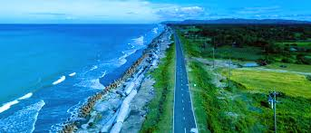

My Cox's Bazar Tour
It was my first visit to the Cox's Bazaar i was so excited and it was not holidays so i have had the best view of the sea. As all the other points were crowded we choose Laboni Point to spend our time. The sea was calm and we stayed more than 3 hours there. The view of that place will make you spell bound. We had enjoyed sunset from the sea and it was the best part of my journey. One incident happened there in the beach, me and my sister forgot the location of our chair were we kept our shoes and left that place bare footed. Me with my sister after one hour or two went to that place again and found our shoes at the same place we left! No one touched them or any other thing never went lost if someone left anything. There were many kids in the beach but no one begs rather they sell something to everyone, This was impressive. I loved that place and want to visit their soon with my friend and family.
My Sitakunda Tour
.jpeg)
A few days ago I and five of my friends started journey from Sitakund in Chattogram division. We wanted to travel at Eco park,sitakund,Chattogram, Bangladesh. After visiting Sitakund hills we decided to go at Eco park that is not far away from Sitakund hills. So, we found a vehicle and went there within thirty minutes. After reached there we took six tickets to visit that park. The ticket price was thirty taka per person. When we were entering that park the time was 12:30PM. After entered that park we saw different kinds of statue.
Road side remains full of deep green natural setting. The road was vertical. We walked on that road from one hour. In that time I saw many beautiful things of nature. There I found one Rosary. The beauty of that rosary made me impressed. That was very beautiful to watch. There were different kinds of rose. Specially, we went that park because of waterfall. I never saw waterfall. So, I was very much excited to see it. For this reason we were walking. The waterfall was remain 1600 feet down from ground level. So, we were get down from ground level. After thirty minutes later we reached at waterfall. When I heard the sound of waterfall my heart full of delight. When I reached there I was enjoying the beauty of nature.
After few times we completed our bath in waterfall. The water was very cold but I enjoyed that bath very well. That bath made me refresh from all of trouble that I did that day. I also took some photography in there.